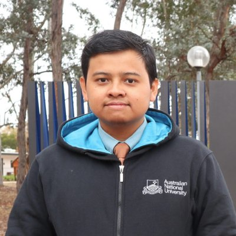

DRF

Dzikri Rahadian Fudholi
Pendiri · menjalankan Komputopedia saat ini
Kandidat PhD bidang Software Engineering and Architecture di University of Groningen, meneliti explainable AI untuk desain perangkat lunak. Dosen di Departemen Ilmu Komputer dan Elektronika, Universitas Gadjah Mada, mengajar AI dan pemrograman. Lulusan S1 Ilmu Komputer (UGM) dan Master of Computing (Australian National University).